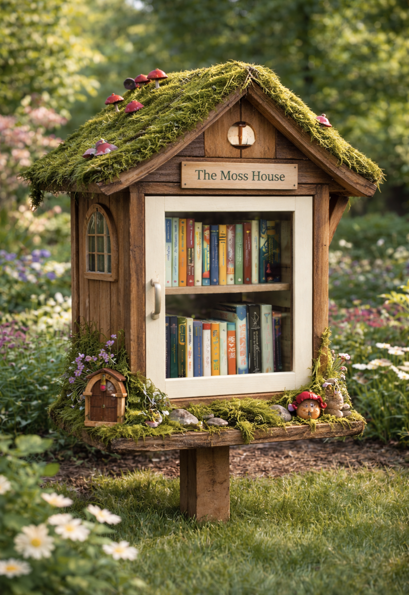

Trois Sœurs is a small, ongoing project built by three sisters - Jane, Ruby, and Lucy, and their parents. Together, we create simple structures designed to invite pause. Places where someone might stop for a moment, take something in, and maybe leave something behind. These installations are small by design, but they aim to create space for connection. Between neighbors, between strangers, and sometimes just within yourself.
This library was built for Académie Lafayette, the girls' school. It sits along a familiar path, one they pass each day walking the dog. Built from scrap materials left over from a construction project, it carries a bit of that history with it. Something repurposed, given a second life in a place full of movement and change.
Over time, it has become part of the rhythm. A quick glance, a stop, sometimes a small crowd of kids gathered around it, exploring what's inside.
We've seen all kinds of things pass through. Books, of course, but also little sculptures and unexpected creations. It's a reminder that this space belongs to the students as much as anyone. Something to interact with, to contribute to, to make their own.
For the girls, it's also a marker. A quiet signal that they can build something and do it well. Their time at this school is limited, like all things. There's a hope that years from now, they'll come back and find it still here, still in use.
And if it's not, we'll build another one.